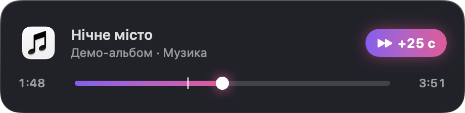
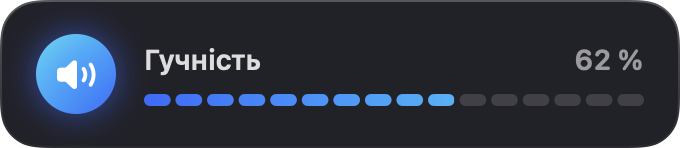
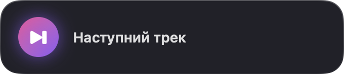
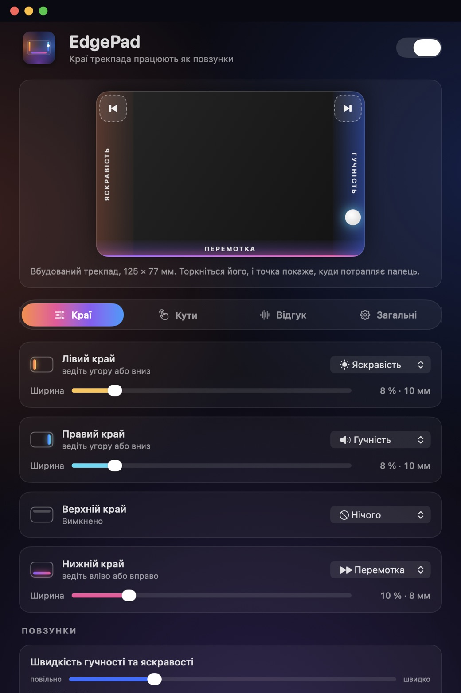

Перемотка музики й відеонове
Spotify, Музика, QuickTime і VLC перемотуються напряму, навіть у фоні, з точним часом на шкалі. Відео в браузері перемотується клавішами ← →.
Одним пальцем по краю трекпада.
EdgePad перетворює краї трекпада на повзунки, а верхні кути на кнопки треків. Ліва смуга керує яскравістю, права гучністю, нижня перемотує музику й відео. Тапи, кліки й жести кількома пальцями працюють як раніше.
Ведіть по кольоровій смузі або двічі клацніть у куті
Покладіть палець у кольорову смугу біля краю трекпада.
Збоку вгору чи вниз, знизу вліво чи вправо. На кожному кроці тихо клацає.
Курсор залишиться там, де був до жесту.
Жест починається, лише коли один палець торкається смуги біля краю й рухається вздовж неї, або коли ви двічі торкаєтеся верхнього кута. Усе інше трекпад робить як завжди.
Spotify, Музика, QuickTime і VLC перемотуються напряму, навіть у фоні, з точним часом на шкалі. Відео в браузері перемотується клавішами ← →.
Двічі торкніться лівого кута, щоб увімкнути попередній трек, правого для наступного. Дію кожного кута можна змінити.
Тихе клацання на кожному кроці. Що вищий рівень, то вищий звук. Гучність клацань регулюється.
Ширина кожного краю від 3 до 40 %, розмір кутів від 8 до 30 мм. Поруч видно, скільки це на вашому трекпаді.
Тапи, кліки, прокрутка й жести кількома пальцями працюють як завжди. Дотик долонею під час набору тексту ігнорується.
Рівень, шкала часу треку чи назва дії внизу екрана. Курсор під час жесту стоїть на місці.
Превʼю показує кожну зону, кути й місце, де зараз лежить палець. Усе розкладено на чотири вкладки.
Дія і ширина кожного краю, швидкість повзунків і крок перемотки.
Зʼявляється внизу екрана під час жесту і зникає, щойно ви відпускаєте палець.




Відкрийте завантажений EdgePad.dmg і перетягніть EdgePad у папку «Програми».
macOS попередить, що не може перевірити розробника. Відкрийте «Системні параметри» → «Приватність і безпека» і в розділі «Безпека» дозвольте відкрити EdgePad.
Коли EdgePad попросить, увімкніть його у списку «Універсального доступу». Без цього не працюють кути, перемотка й фіксація курсора.
Під час першої перемотки Spotify чи Музики macOS спитає, чи може EdgePad ними керувати. Натисніть «Дозволити».
EdgePad поки не нотаризований Apple, тому крок 2 потрібен під час першого запуску. Значок EdgePad зʼявиться в рядку меню, а вікно налаштувань відкриється саме.
EdgePad ще не має підпису й нотаризації Apple, тому macOS не відкриває його одразу. Дозволити запуск треба один раз у «Системних параметрах» → «Приватність і безпека». Далі програма відкривається як звичайно.
Напряму: EdgePad сам змінює позицію треку, навіть коли програма у фоні, а індикатор показує назву, шкалу часу і на скільки секунд ви перемотали. Так само працюють QuickTime Player і VLC. Крок можна вибрати від 2 до 30 секунд.
Відео в Safari, Chrome та інших браузерах, а також в IINA і Apple TV перемотується клавішами ← →, тож вікно з відео має бути активним. Якщо в цей час грає музика, перемотується вона.
Двічі торкніться або клацніть у лівому верхньому куті трекпада, щоб увімкнути попередній трек, у правому для наступного. Одиночне торкання в куті працює як звичайне клацання, лише на мить пізніше.
Щоб натискати за вас клавіші перемотки й медіаклавіші, а курсор тримати на місці під час жесту. Гучність і яскравість працюють і без нього.
Ні. Жест починається, лише коли один палець торкається кольорової смуги й рухається вздовж краю. Прокрутка двома пальцями, системні жести, тапи й кліки працюють як завжди. Якщо смуга спрацьовує випадково, зменште її ширину аж до 3 %.
Ні, EdgePad керує яскравістю вбудованого екрана MacBook. Звичайні зовнішні монітори регулюють яскравість власними кнопками.
Mac із трекпадом і macOS 13 Ventura або новішою. Програма універсальна, для Mac з Apple Silicon та Intel.